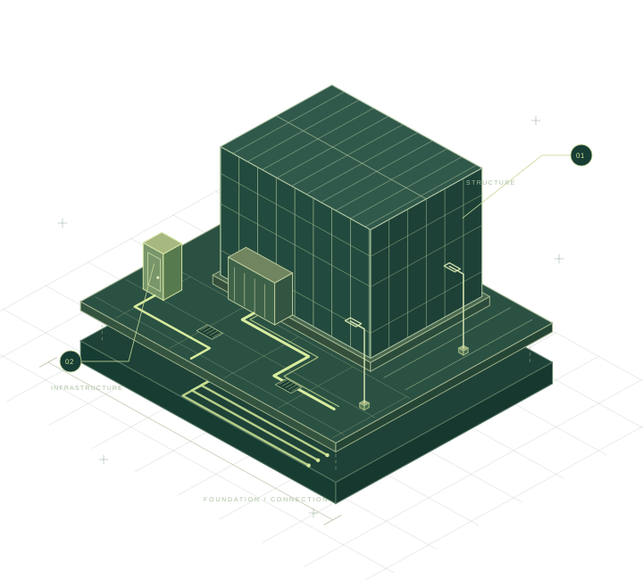

SAITAMA, KAWAGUCHI
街の足元に、
確かな仕事を。
電気設備工事を、外構から支える。
サクラ工業は、埼玉県川口市を拠点に、
電気設備工事における外構工事を行っています。
株式会社サクラ工業SCROLL TO EXPLORE
ELECTRICAL & EXTERIOR WORKS

01OUR BUSINESS
私たちの仕事電気設備の、
その基盤をつくる。
02SELECTED WORKS
現場の積み重ね主な現場名
これまで携わった主な現場をご紹介します。
工事内容・工期・施工範囲などの詳細は、
お問い合わせ時にご確認ください。
IKEA前橋
アイリスオーヤマ埼玉工場
JRA美浦トレーニング・センター
AEON MALL須坂新築工事
※ 現場名のみを掲載しています。
工事に関するお問い合わせ03COMPANY PROFILE
会社概要
川口から、現場へ。
サクラ工業の基本情報をご案内します。
- 会社名
- 株式会社サクラ工業
- 代表者
- 代表取締役 野田 大輔
- 資本金
- 100万円
- 所在地
- 〒334-0063
埼玉県川口市大字東本郷803-25Google Mapsで見る（新しいタブで開きます） - 事業内容
- 電気設備工事における外構工事
- TEL / FAX
- 048-278-8458
- d.noda6669@gmail.com
05GET IN TOUCH
お問い合わせ
会社情報や工事に関するご確認は、
電話またはメールよりお問い合わせください。